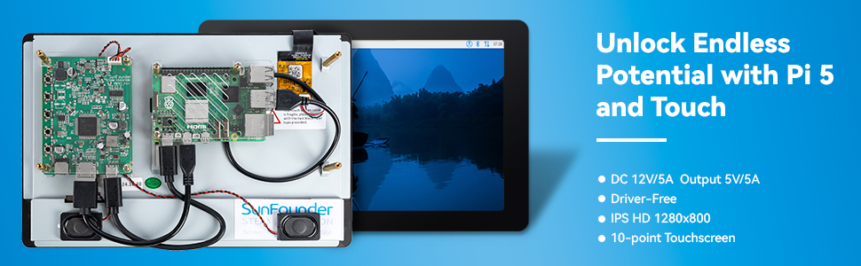
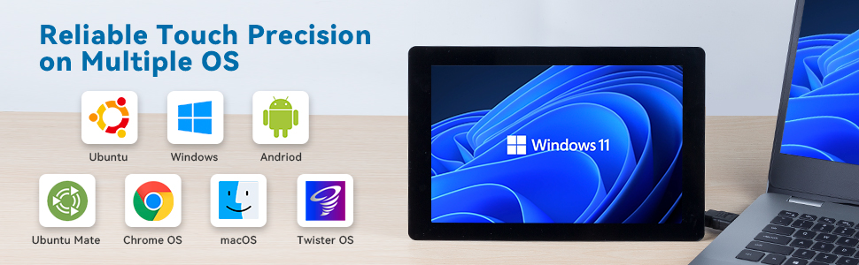
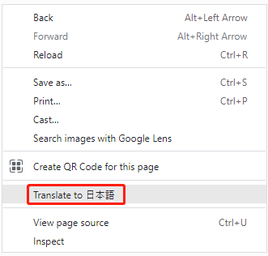
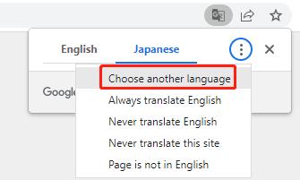
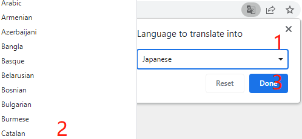

Note
Hello, welcome to the SunFounder Raspberry Pi & Arduino & ESP32 Enthusiasts Community on Facebook! Dive deeper into Raspberry Pi, Arduino, and ESP32 with fellow enthusiasts.
Why Join?
Expert Support: Solve post-sale issues and technical challenges with help from our community and team.
Learn & Share: Exchange tips and tutorials to enhance your skills.
Exclusive Previews: Get early access to new product announcements and sneak peeks.
Special Discounts: Enjoy exclusive discounts on our newest products.
Festive Promotions and Giveaways: Take part in giveaways and holiday promotions.
👉 Ready to explore and create with us? Click [here] and join today!
SunFounder TS-10 10.1-inch Touch Screen for Raspberry Pi 5
The SunFounder 10.1” IPS HD Touchscreen for Raspberry Pi 5 is a versatile display that features 10-point capacitive touch, a 178° wide viewing angle, and dual audio support, making it perfect for various applications. It offers a stable, plug-and-play experience with the latest Raspberry Pi OS and supports other Raspberry Pi models including Pi 4, 3B+, 3B, Zero 2W, and Pi 400. With a DC 12V/5A input and 5V/5A output, it ensures reliable power delivery. The touchscreen is fully compatible with operating systems such as Raspberry Pi OS, Ubuntu, Ubuntu Mate, Windows, Android, macOS, Twister OS and Chrome OS (a USB extension cable may be needed for some setups).
{kind=link}

{kind=link}

About the display language
In addition to English, we are working on other languages for this course. Please contact service@sunfounder.com if you are interested in helping, and we will give you a free product in return. In the meantime, we recommend using Google Translate to convert English to the language you want to see.
The steps are as follows.
In this course page, right-click and select Translate to xx. If the current language is not what you want, you can change it later.

There will be a language popup in the upper right corner. Click on the menu button to choose another language.

Select the language from the inverted triangle box, and then click Done.

- About This Kit
- HARDWARE DESCRIPTION
- INSTALLING THE OS
- ASSEMBLY INSTRUCTIONS
- CHANGING SCREEN RESOLUTION OR ORIENTATION
- PROJECTS AND ACTIVITIES
- APPENDIX
- 3D-PRINTED CASE INSTALLTION GUIDE
- DIY Stand with Standoffs
- FAQ
Copyright Notice
All contents including but not limited to texts, images, and code in this manual are owned by the SunFounder Company. You should only use it for personal study,investigation, enjoyment, or other non-commercial or nonprofit purposes, under therelated regulations and copyrights laws, without infringing the legal rights of the author and relevant right holders. For any individual or organization that uses these for commercial profit without permission, the Company reserves the right to take legal action.